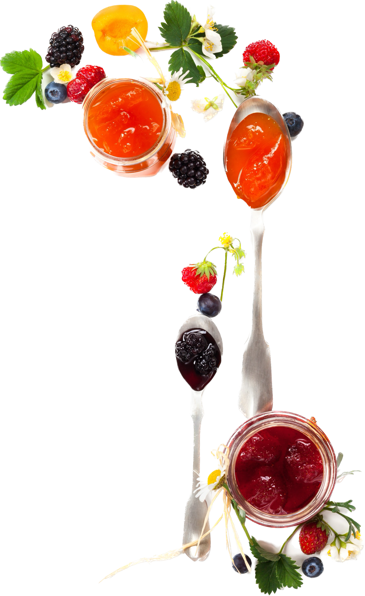

Our Services
-
GLOBAL CONSUMER TRENDS MAPPING
Orchard Brands success in creating exciting new concepts for our clients start with our familiarity of consumer behaviour and consumption trends. Through our global network of partners, we provide a continuous update about food behaviour trends and new technologies that can translate into important cues for client’s new product plans.
-
CUSTOMER SERVICE
Our close customer connexion as business partners sensitize us accountable for our mutual progress. An adaptable and competent team addressed every aspect pertinent to sales and logistics service. We serve our customers in the best possible fashion with services tailored for your needs.
-
CREATIVE DEVELOPMENT CENTER (CDC)
Our CDC provides integrated set of facilities in product development formulation and access to latest ingredient technologies. A qualified team of technical personnel from our development centre pool out resources and find new ways to make food irresistible for your customers.
-